超简单！零基础入门 AI 绘画神器 Stable Diffusion
写给完全 0 基础设计师的 SD 入门教程：从软件总览、五大模型、提示词书写与九大参数，到手把手做一个盲盒 IP 案例，先把 AI 绘图的整个流程跑通。
本文整理自优设网《超简单！教你零基础入门 AI 绘画神器 Stable Diffusion》，版权归原作者所有。操作步骤、链接与配图按原文顺序转录，命令与参数保留英文原样。
00 / 写在前面
本文是一篇关于如何使用 Stable Diffusion 绘画的教程，包括软件介绍和案例带练。在开始学之前，我想提前说一下，我所理解的 AI 绘画的本质，就是手替 —— 人提出方案，AI 帮你完成具体的作画过程。
写这篇文章的初衷，网上的 Stable Diffusion 教程太多了，但是我真正去学的时候发现，没有找到一个对小白友好的，被各种复杂的参数、模型的专业词汇劝退。所以在我学了之后，想出一篇这样的教程，希望能帮助完全 0 基础的小白入门，即使完全没有代码能力和手绘能力的设计师也可以学得会。
受限于篇幅，这篇只介绍最基本的操作，并且会手把手带大家去做一个案例出来，让大家先把 AI 绘图的整个流程跑通。如果反馈还不错的话，下一篇补充一些进阶的操作。
关于 AI 带来的焦虑：第一是要去了解它背后的原理，或者说它大概能做什么，了解之后就相对没有那么焦虑了；第二是打不过就加入，让 AI 成为你的一个工具。同时，即使通过 AI 可以抹平大家技法上的差距，但是审美上的差距是无法用 AI 抹平的，而这个可能会变成大家能力差距的重要来源。
01 / 软件总览
先给大家看一下我用 Stable Diffusion（以下称 SD）画出来的图，可以看到画面很细腻且用色也非常精致。
1. AI 绘画工具的选择
目前市面上最流行的两个绘图工具 Midjourney 和 Stable Diffusion 以及它们之间的区别，具体的研发背景等信息这里不做赘述，大家可以自行百度，只说一下对于设计师更关心的五个方面。
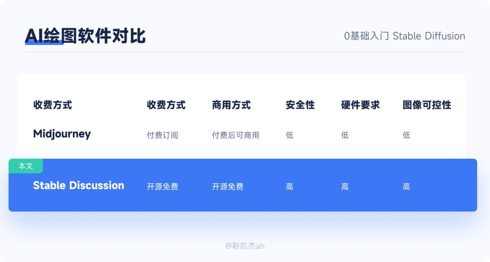
综上，从我的个人角度出发，SD 在工作中落地的潜力是要大于 MJ 的，这也是我选择学习和深入研究 SD 的原因。
2. 软件安装与打开
关于软件的安装，以及环境的部署，建议直接下载大佬们网上的整合包。这里推荐秋葉 aaaki 大佬的整合包：BV17d4y1C73R。直接安装一键整合包，极大地降低了安装难度，对小白非常友好。
这里演示一下 Win 下如何安装，Mac 系统的同学也可以在网上找到对应的一键整合包，显卡不太好的同学也可以选择云端部署：
- Mac 芯片见 BV1Kh4y1W7Vg
- 云端部署见 BV1po4y1877P
① 下载后是这两个文件，先双击运行一下右边的程序，安装一些必要的运行环境，然后解压左侧的压缩文件到你想要安装的位置。
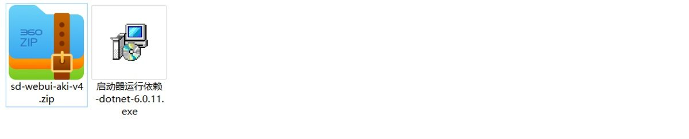
② 打开解压后的文件夹，找到「A 启动器」的 exe 文件，双击打开。
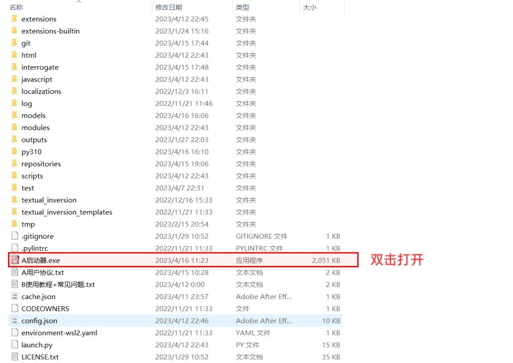
③ 打开后如图所示。
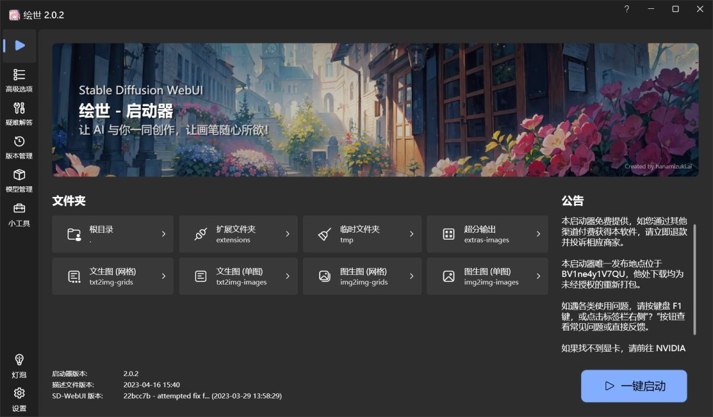
④ 点击「一键启动」，稍等片刻后会自动打开浏览器界面，就可以使用了（第一次打开时会有点久）。
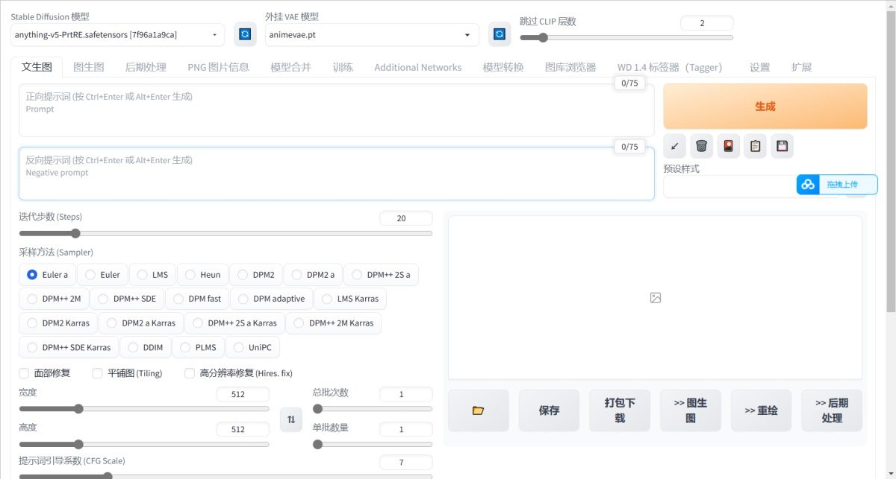
3. 流程和界面介绍
这里不去介绍 SD 的实现模型，只介绍一下我们所看到的呈现模型。可以理解为，就像是在做一道菜一样：首先准备原料（提示词和参数），然后按照菜谱（模型）来烹饪，让原料经历各种处理，最后就得到了可供品尝的美食（图像）。
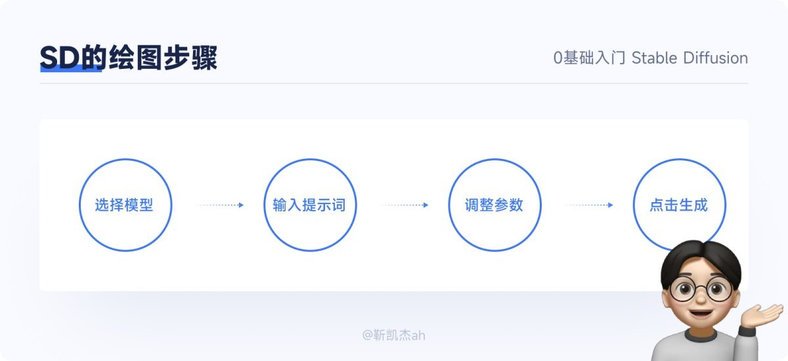
软件的界面整体布局主要是由三大模块构成的：模型、提示词和参数，后面的章节会具体介绍每个模块。
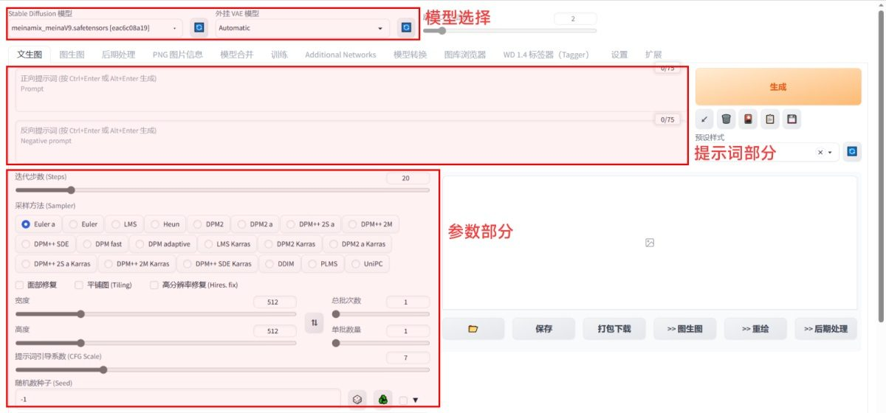
02 / 模型
1. 模型分类：SD 五大模型
模型就像是我们做菜时所用到的菜谱。每个模型都会有自己的风格，例如二次元画风、CG 画风等。在 SD 中，目前共有 5 种模型：
- 基础底模型（单独使用）checkpoint
- 辅助模型（配合底模使用）Embedding、lora、Hypernetwork
- 美化模型VAE
对于这几种的区别和使用方式，可以理解为基础底模型就是烹饪中的「炒」，而辅助模型则是「爆炒、小炒」，最后美化模型则是更细节的方式，例如「盐爆、葱爆、油爆」等。在 SD 中，基础底模型必须有且只能有一种，而后面的模型则没有限制性，可以没有，也可以是一种或多种。
2. 模型的下载和使用
我们在下模型时，就可以看到对应的类别：这里以最常用的基础底模型（checkpoint）和 lora 模型为例，介绍一下它们怎么使用。
- ① 首先要知道下载的模型是什么类别。如果是从常见网站下载的就知道类别；如果是从其他渠道比如别人的百度网盘链接，可以借助网站 spell.novelai.dev 去获取模型类别。
- ② 将模型文件放到对应的文件夹中。可以同时放一张模型的预览图，将图片名称改成和模型一样，后面调用模型时就可以直接根据预览图来选择。在模型命名上，可以用 / 来对模型进行分类整理，例如二次元相关的模型命名为「二次元/XXX」。
- ③ 模型的调用：基础底模型直接选择，没找到就点一下右边的刷新按钮稍等即可；VAE 模型在后面的下拉框中选择，一般采用默认选项，如果出来的图发灰再考虑使用 VAE 模型；其他模型需要先点一下 icon，再点一下想用的模型，此时正向提示词输入框会出现对应的模型，想取消调用再点一下模型或直接在输入框中删掉即可。某些模型还需要在正向提示词输入框中输入特定的触发词，才可以让模型发挥效果。
03 / 提示词
提示词也就是我们对 AI 的指令。正向提示词即对画面的描述，例如一个女孩、月亮、吉他、沙发等；反向提示词指你不想在画面中出现的元素或属性，例如低质量、畸形的手等。
1. 基本规范
- 提示词包括标点符号全部用英文的。
- 单词、短语、句子基本上是等效的。例如 1girl, sofa, sitting 与 A girl sitting on the sofa 对 SD 来说是等效的。
2. 书写提示词的整体思路
在给正向提示词的时候，我们一般通过分类描述的方式来给出，具体可以分为以下三类：整体描述、主体、场景。
① 整体描述包括四个方面：
- 画质高画质还是中等画质或者低画质，2k 或者 4k 等等
- 画风CG、二次元、真人等
- 镜头画面中人物的占比，半身像还是全身像
- 色调冷色调或暖色调
② 主体：对于人物主体的描述包括三个方面 —— 头部、服饰、姿势。
③ 头部：包括的内容和我们玩游戏时捏脸的内容差不多：
- 眼睛大小、颜色和形状，鼻子大小和形状，嘴巴大小和形状，下巴形状等等。
- 皮肤颜色和纹理：人物的皮肤颜色和纹理，例如光滑或有皱纹的皮肤等等。
- 面部特征细节：进一步描述人物的面部细节，例如眼睛的纹理、唇色、发色等等。
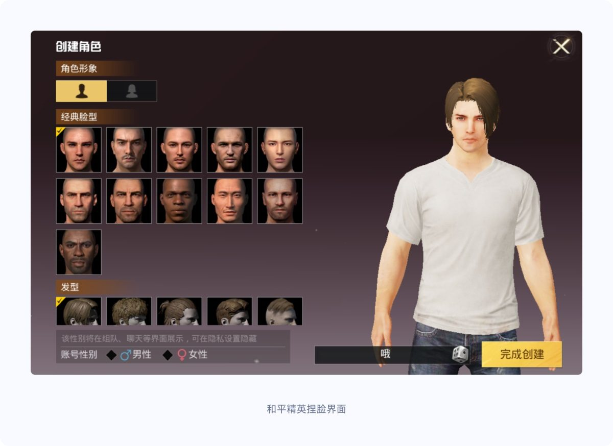
④ 服饰：包括衣服、裤子、鞋以及其他更细节的比如袜子之类的。
⑤ 姿势：即人物的姿势，坐立跑等。
⑥ 场景：基础的场景描述一般包括三个内容 —— 时间、地点、天气，进阶的表达可以加入一些细节，例如天空中的蝴蝶、花瓣等。
3. 提示词的语法
仅仅有了提示词还不够，我们还需要知道怎么把提示词组成 SD 可以识别的格式。
① 连接方式：不同的提示词之间用英文逗号分隔；提示词越靠前，权重越高，所以主体应该放在前面。
② 强化 / 弱化方式：
- (提示词:权重数值)。数值取值范围是 0.1～100，默认是 1，小于 1 是弱化，大于 1 是强化。例如 (a girl:0.8)。
- (提示词) 表示强化、[提示词] 表示弱化。允许套多层来增强强化的程度。例如 ((a girl))。
③ 进阶玩法：推荐几个提示词网站，在掌握了基本用法后再去看这些网站就会更得心应手：
04 / 参数
这里不去说太多参数的官方解释，而且在初期并不是所有的参数都需要了解，所以直接用通俗易懂的语言介绍需要用到的参数是什么，以及怎么用。
1. 采样方法
一般情况下使用 DPM++ 2M、DPM++ 2M Karras 或 UniPC；想要一些变化，就用 Euler a、DPM++ SDE、DPM++ SDE Karras、DPM2 a Karras。
2. 迭代步数
这里指的是 SD 用多少步把你的描述画出来，一般 20 到 40 步就足够了。迭代步数每增加一步，都会给 AI 更多的机会去比对提示和当前结果并进行调整。更高的迭代步数需要更多的计算时间，但并不意味着步数越高质量越好。
相同提示词和参数、不同迭代步数时的表现：在这组参数下，步数在 32 左右表现最好，从 32 到 40 提升不大，到 48 时已出现一些畸形，到 64 时腿部已经完全畸形了。
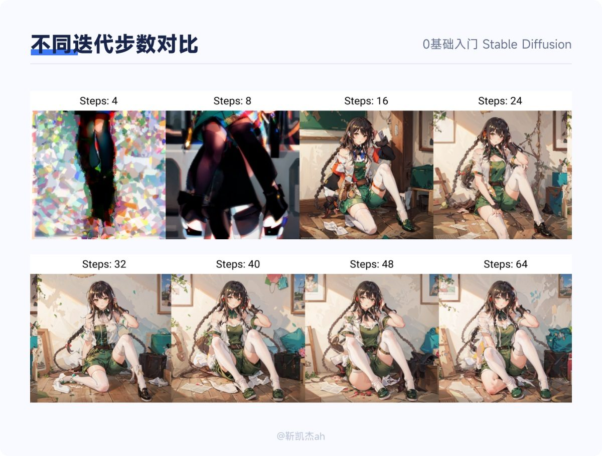
3. 面部修复
根据个人喜好开关，这个对最终成像效果影响不大。
4. 平铺图
这个一般用不到。
5. 高分辨率修复
通俗来说，就是以重新绘制的方式对图像进行放大，并且在放大的同时补充一些细节。打开后会出现一些子参数：
- 放大算法用默认值即可。
- 高分迭代步数一般选在 10~20 即可。以图为例，步数超过 20 后就开始出现畸形。
- 重绘幅度一般是 0.5~0.8 之间。幅度过小效果不好，幅度过大和原图差异太大。
- 放大倍率指最终图与原图分辨率的比值。例如默认生成的图是 512×512，设定为 2 倍后最终产出 1024×1024。
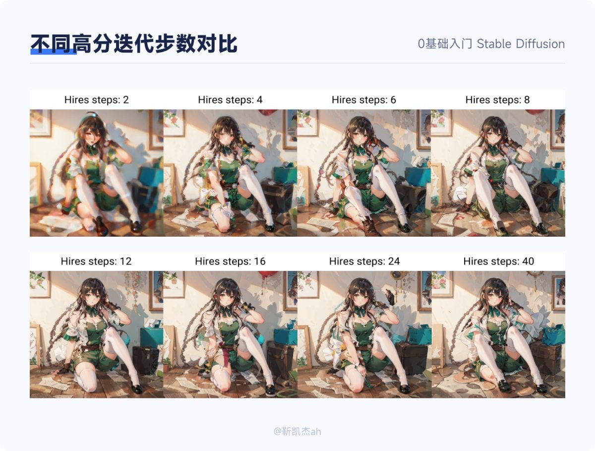
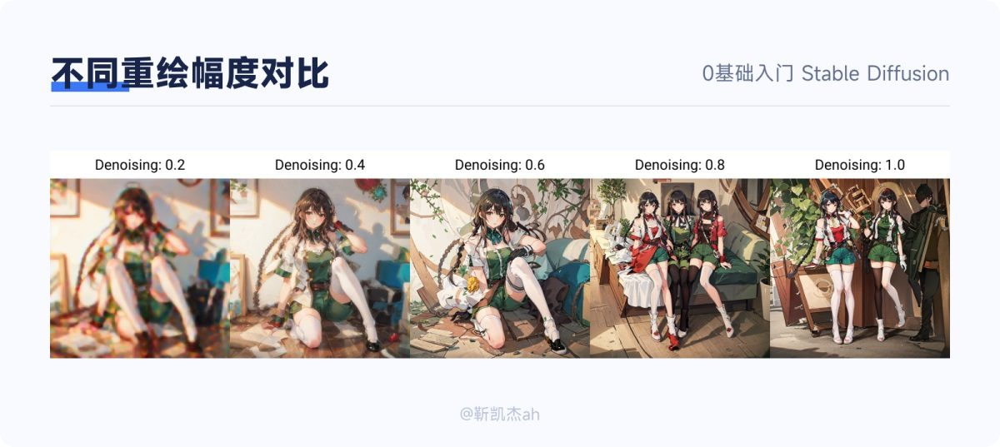
6. 总批次数和单批数量
这个是指一次性出图的数量。以搬砖为例，同样是搬 4 块砖：体力好的人一次搬 4 块、只搬一次，对应 SD 中就是总批次数 1、单批数量 4；体力不好的人一次只能搬一块、需要搬 4 次，对应总批次数 4、单批数量 1。一般而言，如果不是顶级显卡，我们都会保持单批数量为 1，去改变总批次数来增加一次性出图的数量。
7. 提示词引导系数
最终生成的画面和你描述词的趋近程度，一般设置为 7~15 之间，太高也会出现问题。
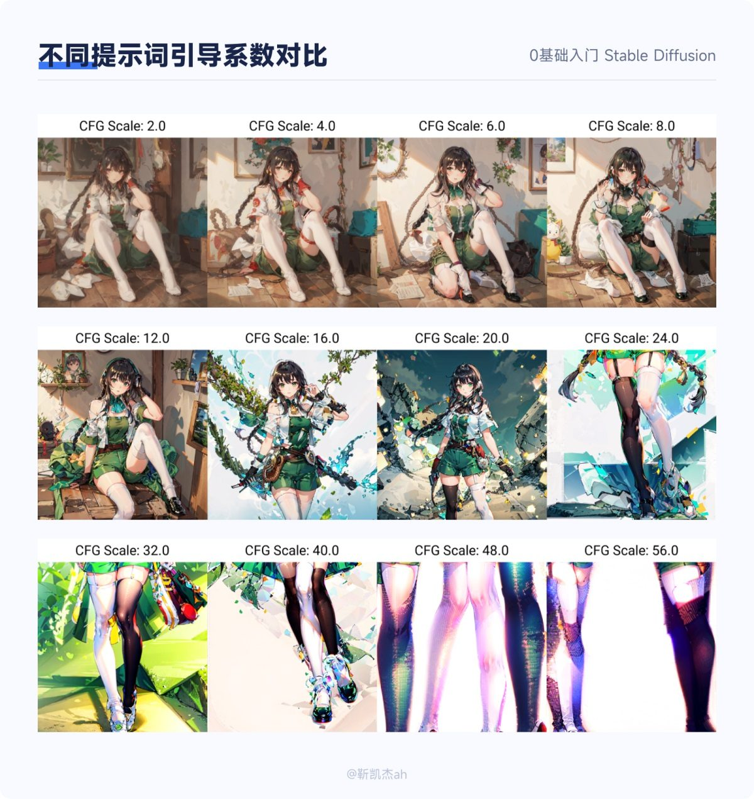
8. 随机数种子
随机数种子就像做一道菜时加入的特定调料，它可以影响最终生成图像的过程。不同的随机数种子会生成不同的图像，每个图都会有它对应的随机数种子，如果想还原这张图，或者绘制一张相似的图，必须保证这个值是相同的。随机数种子不变的情况下，即使模型发生了改变，最终生成图的大概结构和配色也会有一定相似性。我们可以在输入框中输入特定的值以固定随机数种子，否则可以点一下旁边的骰子 icon，变成 -1（随机值）让模型采用随机值生成图像。
9. 变异随机种子
在理解了随机种子之后，变异随机种子相当于又加入了第二种特定调料，而后面的变异强度就指的是两种调料的占比，数值越大越接近第二种。数值为 0 时，就指的是完全不用变异随机种子。一般用于确定了图后，对图生成其他相似画面的图像。例如在做 IP 时，通过加入变异随机种子，可以实现画面内容不变的情况下生成带有些许差异的画，从中选择更优的。
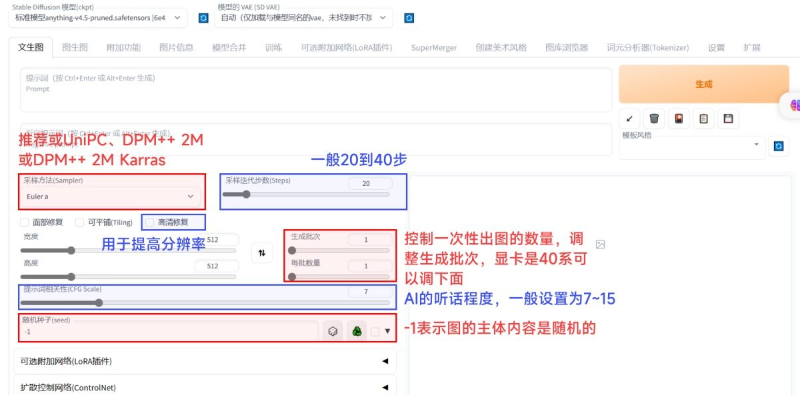
05 / 案例演示：盲盒 IP
这里以做一个盲盒 IP 为例，演示一下基础的文生图流程。在了解了基础概念后，其他的操作就相对简单了，大家可以自行去探索。整理思路：
- 风格探索与主体内容
- 对合适的图进行细节补充与修复
1. 模型下载与安装
首先我们去 C 站下载对应的模型，以这个盲盒模型为例：civitai.com/models/25995/blindbox。
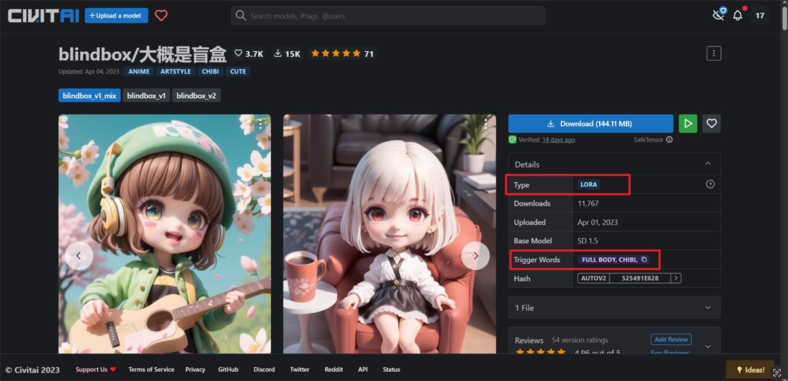
从右边模型信息可以知道两个重要的信息：这个模型的种类是 LORA 模型，以及它的触发词是 full body, chibi。所谓触发词指的就是，只有在将触发词加入到正向提示语的输入框中，才能触发这个 Lora 模型的效果。LORA 模型是一种辅助模型，需要配合基础底模型来使用，这里一般也推荐使用作者示例图中所使用的基础底模型。点开一个示例图，可以看到包括基础底模型、提示语以及参数在内的信息。
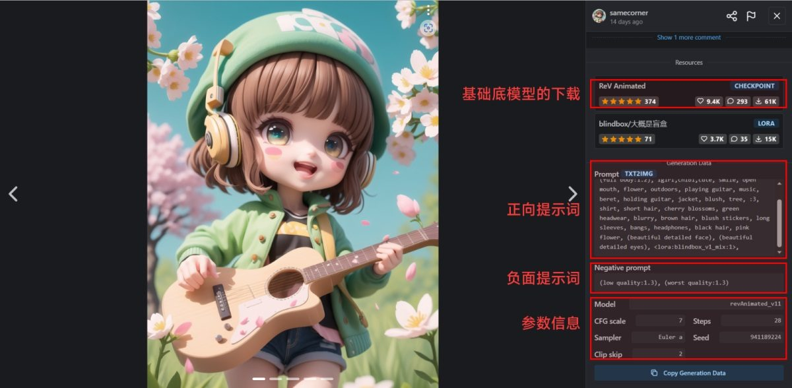
作者也贴心得给出了对应资源的下载链接：civitai.com/models/7371。我们将两个模型下载好后，分别放到对应的文件夹中：
- 基础底模型（checkpoint）novelai-webui-aki-v4/models/Stable-diffusion
- lora 模型novelai-webui-aki-v4/models/lora
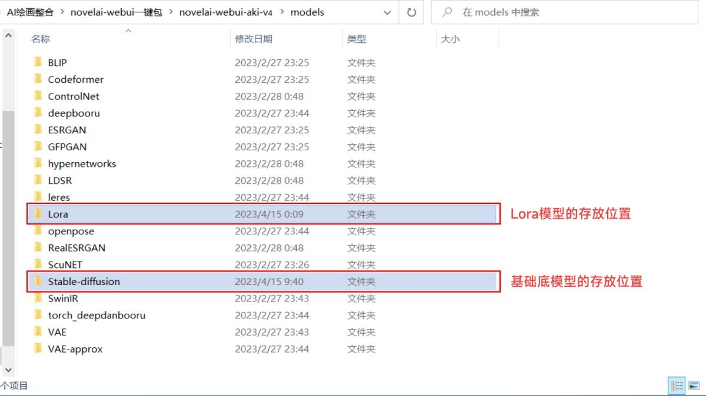
这里有两个小技巧：一是在 Lora 中新建一个文件夹改为「盲盒」，对模型进行分类管理；二是保存模型时再下载一张示例图，将名称改成和 Lora 模型一样，然后放在模型文件旁边，这样在 SD 界面就可以预览模型效果。
接下来，打开 web ui 界面，点击模型后的刷新按钮，并将左上角的第一个下拉框选择到对应的模型。其中 Lora 模型是默认隐藏的，需要点一下生成按钮下的第三个 icon 才会显示。
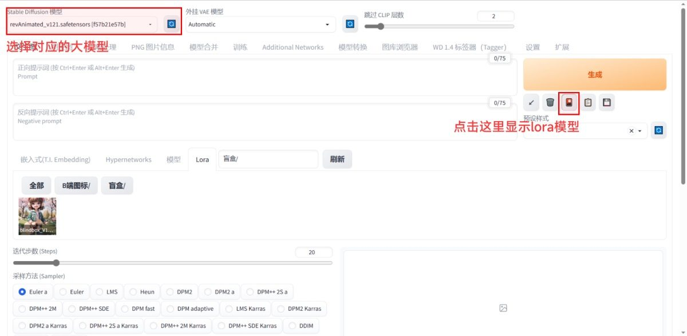
到这里，我们完成了模型的下载和基础底模型的调用。
2. 提示词的书写
对于新手，建议先从模仿开始。打开 C 站盲盒模型的页面，点击示例图，可以看到包括提示词在内的各种信息。
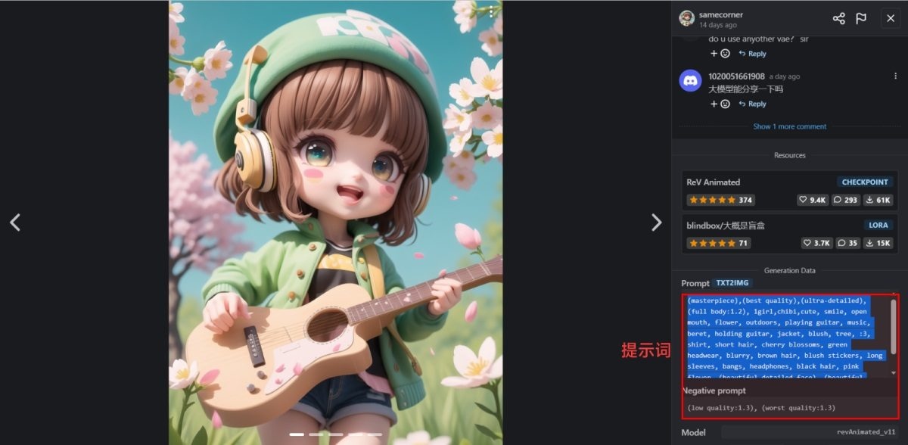
把提示词复制下来，英文不好的小伙伴可以直接复制到翻译工具中。
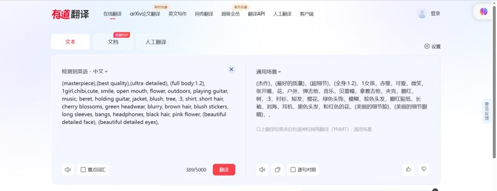
接下来对这段关键词做一个简单的分析拆解：
- 整体描述(杰作)，(最好的质量)，(超细节)，(全身:1.2)，(美丽的细节脸)，(美丽的细节眼睛)
- 触发词chibi
- 人物 & 场景一个女孩，可爱，微笑，张开嘴，花，户外，弹吉他，音乐，贝雷帽，拿着吉他，夹克，腮红，树，衬衫，短发，樱花，绿色头饰，模糊，棕色头发，腮红贴纸，长袖，刘海，耳机，黑色头发，粉红色的花
我们可以直接复用整体描述的部分，将这部分复制到正向提示词输入框中，然后对后面的人物和场景部分重写。这里用到之前介绍过的书写提示词中人物和场景的技巧：「眼睛，皮肤、头发、服饰、姿势、时间、地点」，按着这个顺序对画面描述如下。
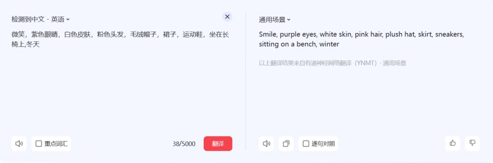
将英文复制到正向提示词中，接下来点击一下盲盒的 Lora 模型，正向提示词部分就多了一句，这句话就表示对 lora 模型的调用。
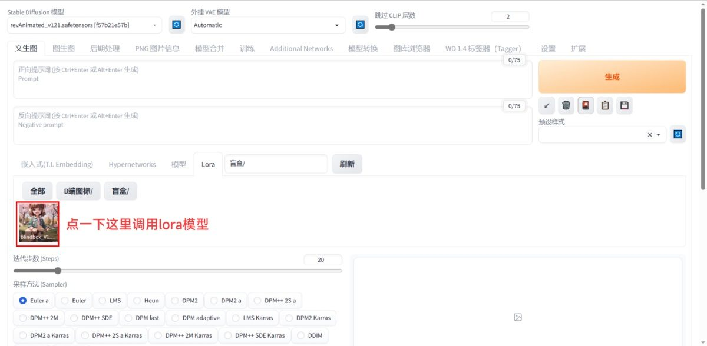
最后一步，将示例图的负向提示词也复制到 SD 中，就得到了最终的提示词。
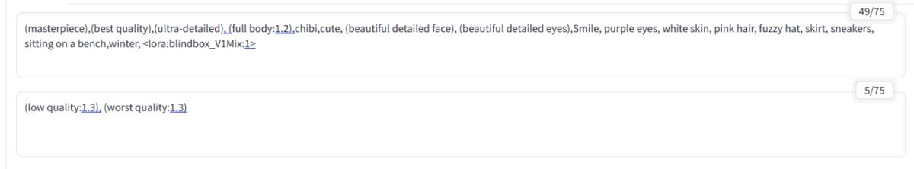
3. 参数设置
参数设置这里，采样方式、采样迭代步数和提示词引导系数三个参数建议设置成和 Lora 模型示例图一致的参数，这样能比较好地发挥 Lora 模型的效果。作为前期探索风格的阶段，总批次数和单批数量可以设置成 9 和 1，随机种子设置成 -1，这样一次性会产出 9 张不同的图，方便选择。高分辨率修复在前期不建议打开，可以在图的内容确定后再打开，进行细节优化。
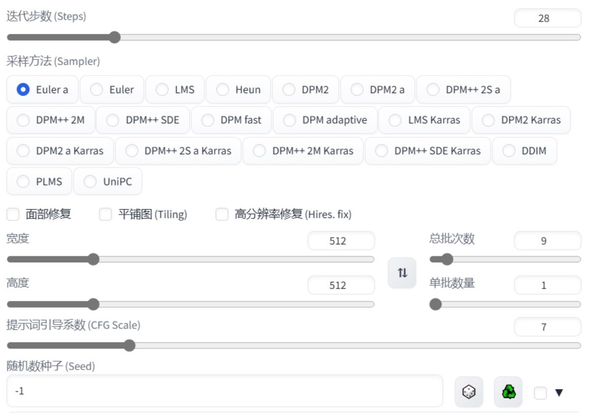
设置好参数后点击生成。由于是随机的，生成的图像会和这里不一样，但是整体的画面都是很相似的。
可以看到，整体图片的风格已经比较满意了，除了手的部分还有些问题。接下来就可以选择一张最满意的，去补充和修复细节，这里以第 6 张图为例。
我们接下来要做的是这三件事：
- 固定这张画面，保证下一张画是在这个基础上完成的
- 补充画面的细节和提高分辨率
- 修复手的部分
首先是第一步固定画面：每个图都会有它对应的随机种子，想还原这张图或者绘制一张相似的图，必须保证这个值是相同的。所以我们需要找到这张图的 seed 值，填入参数栏中的随机数种子输入框中。
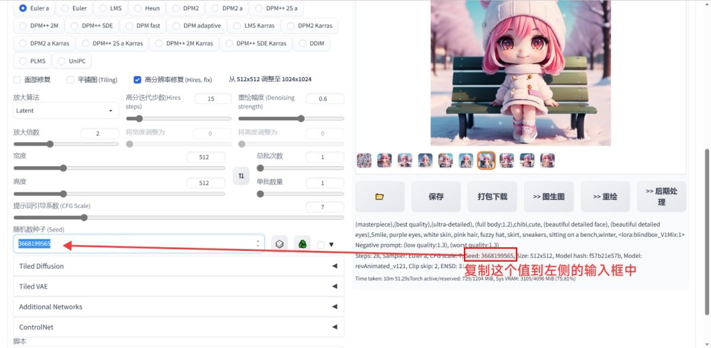
下一步是对画面进行细节补充，这一步会用到高分辨率修复的参数：先选中第 6 张图，把高清修复采样次数调整到 15，重绘幅度调整到 0.6。注意这一步要把总批次数和单批数量调整到 1，否则还是会一次性生成 9 张图，需要较长的时间。
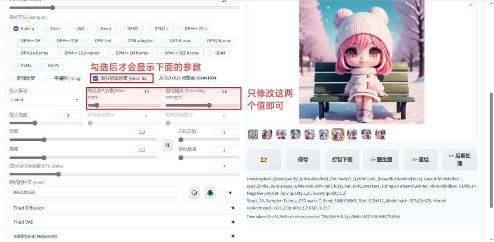
最后一步，我们去修复手的问题，这里采用补充反向提示词的方式来完成。
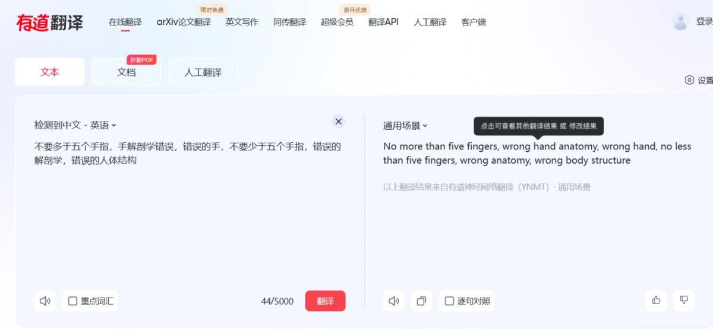
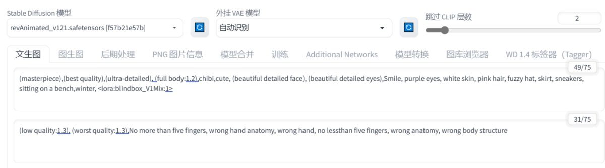
将英文翻译填入反向提示词中后，点击生成，就可以得到这么一张效果还算不错的图了。
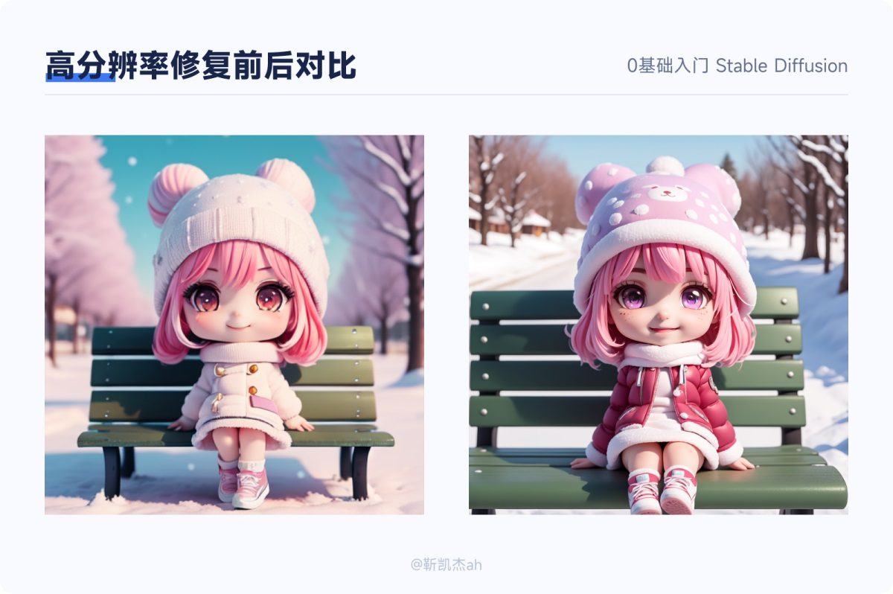
这只是一个简单的例子，里面用到的提示词并不多，我们可以继续加入提示词来丰富画面、提升细节，例如加入光效描述到正向提示词中。
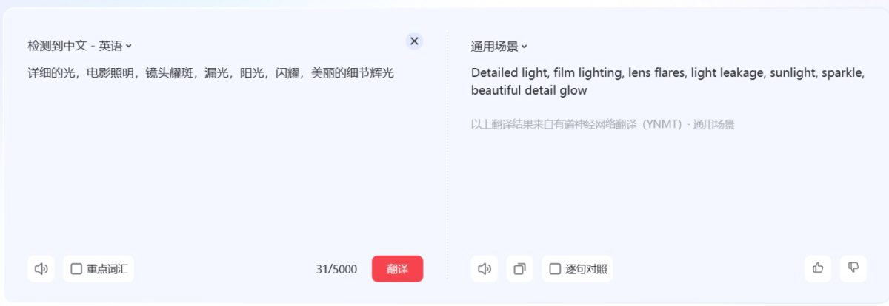
生成的图像如下，可以看到又增加了一些光感，整体细节和品质又提升了一些。这里仅仅以此为范例，大家可以去增加自己想要的各种提示词来生成自己想要的图。
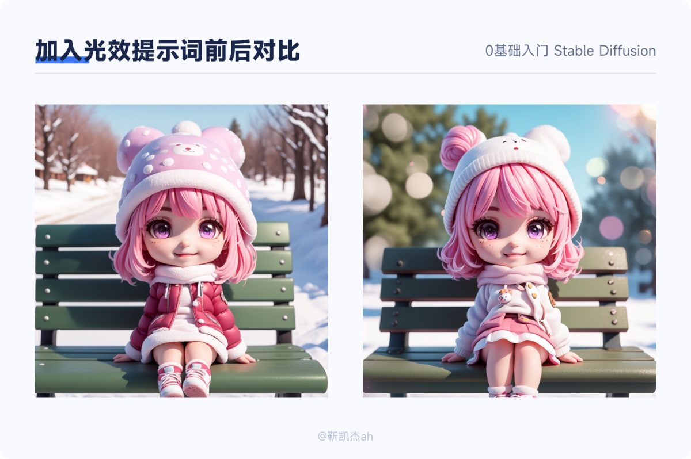
06 / 结语与推荐模型
文章最后再给大家推荐 5 个我认为非常优质的模型：
AI 只是手替，方案在人。把提示词、模型与参数这套流程跑通之后，剩下的就是不断练习审美与表达 —— 这是 AI 抹平不了的部分。